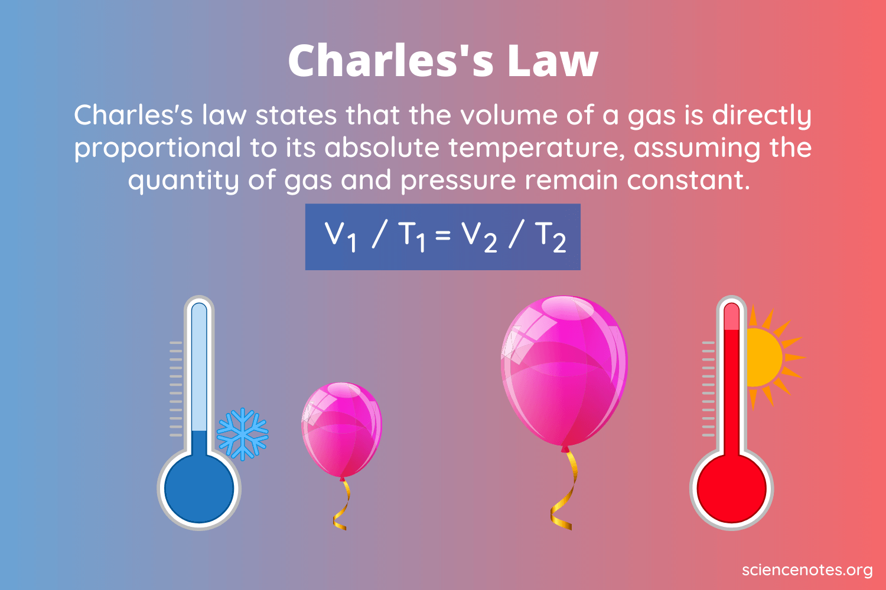

Example problems to Charles' Law
First Example: Calculate the decrease in temperature (in Celsius) when 2.00 L at 21.0 °C is compressed to 1.00 L.
Formula:
(2.00 L) / 294.0 K) = (1.00 L) / (x)
Second Example: 600.0 mL of air is at 20.0 °C. What is the volume at 60.0 °C?
Formula:
(600.0 mL) / (293.0) = (x) / (333.0 K)
Last Example: A gas occupies 900.0 mL at a temperature of 27.0 °C. What is the volume at 132.0 °C?
Formula:
(900.0 mL) / (300.0 K) = (x) / (405.0 K)
